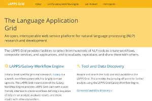
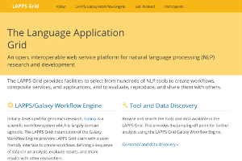
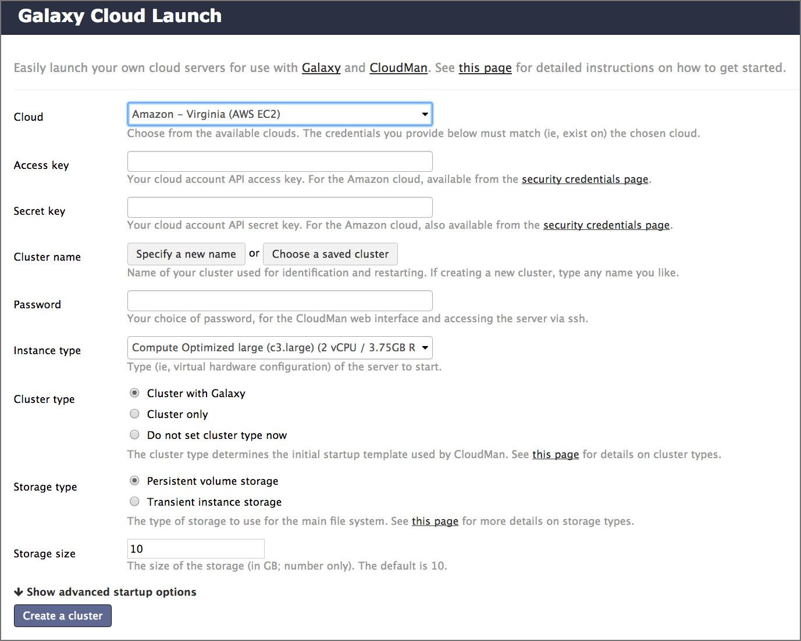

Options for using Galaxy
Contributors
 Dave Clements
Dave Clements  Anthony Bretaudeau
Anthony Bretaudeau  Anne Pajon
Anne Pajon  Nicola Soranzo
Nicola Soranzo
Questions
Which Galaxy instance should I use?
last_modification Last modification: Jul 9, 2021
Options for using Galaxy
Options for using Galaxy
Galaxy is available in many ways, each with different configurations and capabilities
Here are some options
Speaker Notes
Many workshops use Galaxy instances that go away once the workshop is done. This deck lists options for using Galaxy outside of a training context.
usegalaxy.org
- usegalaxy.org is the Galaxy Project’s public server
- Hosted at the Texas Advanced Computing Center (TACC)
- Lots of
- tools
- reference genomes
- compute power
- storage
- But also very busy
- Averages 250,000 jobs per month in 2016
- A single resource cannot scale to meet the demand of the entire world, nor can it support all wanted tools, genomes, …
Public Galaxy Servers
.image-25[ ]
.image-25[]
.image-25[]
.image-25[]
.image-25[]
]
.image-25[]
.image-25[]
.image-25[]
.image-25[]
Public Galaxy Servers
- General purpose genomics servers
- Domain specific servers
Can be specific to:- Research methods: ChIP-Seq, RNA-Seq, repeats, …
- Organisms: Pathogens, phage, rice, poplars (!), …
- Non-genomic domains: image analysis, social science, natural language processing, …
- Tool servers
- Host specific tools to make them easy to access and run
Complete list: bit.ly/gxyServers
Semi-public Galaxy services
Access based on geography or community membership
| Geography | Resource |
|---|---|
| Australia | Genomics Virtual Lab (GVL) |
| Canada | GenAP |
| Norway | Norwegian e-Infrastructure for Life Sciences (NeLS) |
| US | Jetstream |
Complete list: bit.ly/gxysemipublic
.pull-left[
Public clouds via CloudLaunch
.left[CloudLaunch currently only supports:]
- Jetstream (covered above)
- Amazon Web Services (AWS)
- You need to create an AWS account (which requires a credit card) and then provide your public and secret keys to CloudLaunch
]
.pull-right[ .image-75[] ] —
.pull-left[
CloudLaunch / CloudMan instances
- Comes with 100’s of tools and many pre-defined reference genomes
- CloudLaunch starts a CloudMan-based Galaxy instance
- CloudMan is a cloud management tool that moves much / all of the cloud management work into a Graphical user interface ]
.pull-right[
.image-75[ ]
]
—
]
]
—
CloudMan
CloudMan enables you to statically or dynamically scale compute power
- This example shows a Galaxy Server with a head node and one worker node, and that is configured to scale up to 5 worker nodes, if demand justifies it
- Cloud instances can be incredibly cost effective, but only if you are actually using them when they are up
- Paying to have a cloud instance up for two weeks that you only use for 8 hours is not cost effective
- It is very important to shut down and remove everything when you are done
Docker (and maybe other appliances?)
Stuff about docker…
Run your own Galaxy locally
- Galaxy is open source software and can be installed on local compute infrastructure, from lab servers to institutional compute clusters
- Installing Galaxy locally is relatively easy, but
- the initial install does not include reference genomes and only has a few tools
- installing tools and genomes, setting up authentication, and connecting to institutional compute resources all takes work
- There are hundreds of local Galaxy installs around the world
- Installing tools and genomes has become much easier in recent years, and can now often be done with the Galaxy Admin GUI
- Authentication and connecting to institutional compute resources is still heavy lifting
Commercial support
- You can buy a preconfigured Galaxy server from BioTeam or NABE3 International
- Globus Genomics provides cloud-based Galaxy servers
- Commercially provided consulting and training are also available
Which Galaxy instance to use?
- Choose based on
- size of datasets, available storage, backup
- data security
- computational requirements
- tools installed
Thank you!
This material is the result of a collaborative work. Thanks to the Galaxy Training Network and all the contributors! This material is licensed under the Creative Commons Attribution 4.0 International License.
This material is licensed under the Creative Commons Attribution 4.0 International License.